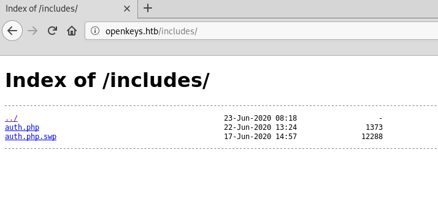
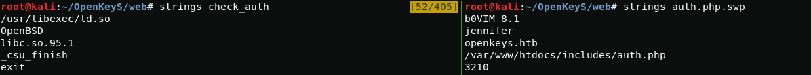

Foothold
First, let's scan the ip address.
{kind=link}
nmap -A -T5 -sC -p19-65000 10.10.10.199And so, as we see, scanning with nmap showed us that the operating system is OpenBSD installed on the machine.Also i added openkeys.htb at my /etc/hosts file. Now it's worth checking the web server
{kind=link}
vim /etc/hostsI wonder if this is the login page.
{kind=link}
User
First, I'll run ffuf to find interesting files or directories and while ffuf is fuzzing the web page, I will proceed to study the login page with burp suite.
ffuf -u http://openkeys.htb/FUZZ -w /usr/share/wordlists/dirb/big.txt -e .txt,.html,.php -c{kind=link}
As you can see, the post request is quite simple and we can try using hydra to brute force credentials, but I think this is not our way. Now I think we need to take a look at what ffuf found
{kind=link}
I think we should check the includes web directory
{kind=link}
In the includes directory I found auth.php and auth.php.swp. In order to restore the contents of the auth.php file, I will use the auth.php.swp file
wget http://openkeys.htb/includes/auth.php.swp && vim -r auth.php.swpJust click enter and we get the auth.php source code
{kind=link}
It looks like the authorization mechanism is related to the file ../auth_helpers/check_auth, so we should download it and study
{kind=link}
curl openkeys.htb/../auth_helpers/check_auth -o check_auth && file check_authAfter I downloaded this file using curl I used the utility file to find out what the file is. File showed me that it was an executable file, but I could not run it. At first I thought it was time for RE, but then I came to the conclusion that RE is a rabbit hole so I need to take a different path. After some time, I came to the conclusion that I need to check these files using the string utility. Using it, in the auth.php.swp file I found a potential username jennifer, and in the check_auth file I found the libc.so.95.1 library
{kind=link}
Googling I found an article describing and exploiting a vulnerability in the libc library in OpenBSD. It wrote that using -schallenge you can bypass the authentication mechanism. Now let's try to exploit this vulnerability on the login page
{kind=link}
Now exploiting the vulnerability, I successfully login in web app
{kind=link}
"No keys found for user -schallenge". It looks like we need to get the ssh authentication key, but how do we do that if we can only bypass the authentication mechanism if we use the username -schallenge? After some thought, I came to the conclusion to put the username in the cookie with firefox extension Cookie-Editor and I successfully logged in as jennifer and get id_rsa key (the username I got from the auth.php.swp file)
{kind=link}
Now connect via ssh
chmod 700 id_rsassh jennifer@openkeys.htb -p 22 -i id_rsa{kind=link}
Privilege Escalation
After googling i found exploit for CVE-2019-19520 in github.
{kind=link}
Now I download it from my machine using Curl and SimpleHTTPServer and then run and get root
{kind=link}
{kind=link}
That's all. Thanks for your attention.